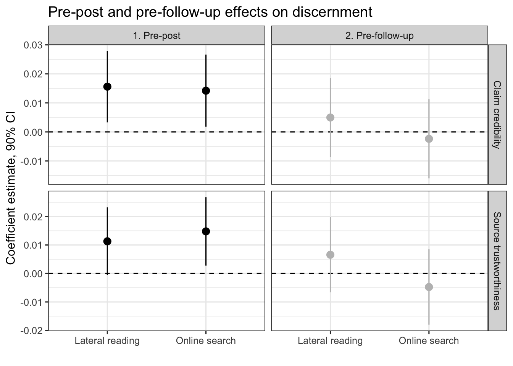

Code
library(readr)
library(lme4)
library(robustlmm)
library(broom.mixed)
library(tidyverse)
library(gridExtra)
library(PupillometryR)
library(purrr)
library(optimx)
library(kableExtra)
library(ordinal)
library(brms)
library(effectsize)
library(emmeans)
library(report)
data <- read_delim("../data/exp_data.csv",
delim = ";", escape_double = FALSE, trim_ws = TRUE)
data[data == 997] <- NA
data <- data%>%
mutate(phase = relevel(factor(phase), levels = c("pre", "post", "follow-up"), ref = "pre"))
data_prepost <- data %>% filter(phase %in% c("pre", "post"))
data_prefollow <- data %>% filter(phase %in% c("pre", "follow-up"))
# Model 1s: Source Trustworthiness (Pre vs Post)
model_1s <- lmer(source_trustworthiness ~ item_type * phase * treatment +
(1 + item_type + phase | ID) +
(1 | link_number), data = data_prepost)
# alternative specification: discernment calculation first (sanity check & effect size)
data_prepost$trustworthiness_discernment <- data_prepost$source_trustworthiness * data_prepost$item_type
model_1s_disc <- lmer(trustworthiness_discernment ~ phase * treatment +
(1 + item_type + phase | ID) +
(1 | link_number), data = data_prepost)
# alternative specification: pretest values as control
data_post_only <- data_prepost %>%
filter(phase == "post")
# Calculate pretest means by participant and item_type
pretest_values <- data_prepost %>%
filter(phase == "pre") %>%
group_by(ID, item_type) %>%
summarise(source_trustworthiness_pre = mean(source_trustworthiness, na.rm = TRUE),
.groups = "drop")
# Join pretest values to post data
data_post_with_pretest <- data_post_only %>%
left_join(pretest_values, by = c("ID", "item_type"))
model_1s_pretest_control <- lmer(source_trustworthiness ~
item_type * treatment + source_trustworthiness_pre +
(1 + item_type | ID) +
(1 | link_number),
data = data_post_with_pretest)
# Model 2s: Source Trustworthiness (Pre vs Follow-up)
model_2s <- lmer(source_trustworthiness ~ item_type * phase * treatment +
(1 + item_type + phase | ID) +
(1 | link_number), data = data_prefollow)
# Model 1c: Claim Credibility (Pre vs Post)
model_1c <- lmer(claim_credibility ~ item_type * phase * treatment +
(1 + item_type + phase | ID) +
(1 | link_number), data = data_prepost)
# Model 2c: Claim Credibility (Pre vs Post vs Follow-up)
model_2c <- lmer(claim_credibility ~ item_type * phase * treatment +
(1 + item_type + phase | ID) +
(1 | link_number), data = data_prefollow)
#################### Plots #####################################################
# Models 1s and 1c
trustworthiness_tidy <- tidy(model_1s) %>%
mutate(rating_type = "Source trustworthiness")%>%
filter(effect == "fixed")
credibility_tidy <- tidy(model_1c) %>%
mutate(rating_type = "Claim credibility")%>%
filter(effect == "fixed")
trustworthiness_tidy2 <- tidy(model_2s) %>%
mutate(rating_type = "Source trustworthiness")%>%
filter(effect == "fixed")
credibility_tidy2 <- tidy(model_2c) %>%
mutate(rating_type = "Claim credibility")%>%
filter(effect == "fixed")
model_coefficients <- bind_rows(trustworthiness_tidy, credibility_tidy)
model_coefficients2 <- bind_rows(trustworthiness_tidy2, credibility_tidy2)
# numeric confidence intervals
model_coefficients$ci_lower <- model_coefficients$estimate - model_coefficients$std.error*-qnorm((1-0.90)/2)
model_coefficients$ci_upper <- model_coefficients$estimate + model_coefficients$std.error*-qnorm((1-0.90)/2)
model_coefficients2$ci_lower <- model_coefficients2$estimate - model_coefficients2$std.error*-qnorm((1-0.90)/2)
model_coefficients2$ci_upper <- model_coefficients2$estimate + model_coefficients2$std.error*-qnorm((1-0.90)/2)
#### Combined Plot ####
# Combine both models
model_sc_combined <- bind_rows(
model_coefficients %>%
mutate(phase = "1. Pre-post"),
model_coefficients2 %>%
mutate(phase = "2. Pre-follow-up")) %>%
mutate(term = case_when(
term == "item_type:phasepost:treatmentlateral_reading" ~ "Lateral reading",
term == "item_type:phasepost:treatmentonline_search" ~ "Online search",
term == "item_type:phasefollow-up:treatmentlateral_reading" ~ "Lateral reading",
term == "item_type:phasefollow-up:treatmentonline_search" ~ "Online search",
.default = as.character(term)
)) %>%
filter(term == "Lateral reading" | term == "Online search")
model_sc_combined%>%
select(-effect,-group,-statistic)%>%
kbl(caption = "Preregistered treatment effects (pre vs. post; pre vs. follow-up) with 90% CIs",format = "html",digits = 3,
col.names = c("Treatment", "Estimate", "SE","Outcome", "90% CI Lower", "90% CI Upper", "Phase")) %>%
kable_styling(latex_options = c("hold_position"))| Treatment | Estimate | SE | Outcome | 90% CI Lower | 90% CI Upper | Phase |
|---|---|---|---|---|---|---|
| Lateral reading | 0.011 | 0.007 | Source trustworthiness | -0.001 | 0.023 | 1. Pre-post |
| Online search | 0.015 | 0.007 | Source trustworthiness | 0.003 | 0.027 | 1. Pre-post |
| Lateral reading | 0.016 | 0.007 | Claim credibility | 0.003 | 0.028 | 1. Pre-post |
| Online search | 0.014 | 0.008 | Claim credibility | 0.002 | 0.027 | 1. Pre-post |
| Lateral reading | 0.007 | 0.008 | Source trustworthiness | -0.007 | 0.020 | 2. Pre-follow-up |
| Online search | -0.005 | 0.008 | Source trustworthiness | -0.018 | 0.008 | 2. Pre-follow-up |
| Lateral reading | 0.005 | 0.008 | Claim credibility | -0.009 | 0.019 | 2. Pre-follow-up |
| Online search | -0.002 | 0.008 | Claim credibility | -0.016 | 0.011 | 2. Pre-follow-up |
Code
interval <- -qnorm((1-0.90)/2) # 90% multiplier for CI
# Create the plot with shifted grey coefficients and separated facets
effects_sc_combined <- ggplot(model_sc_combined, aes(x = estimate, y = term, colour = phase)) +
geom_vline(xintercept = 0, linetype="dashed", colour = "black") +
geom_point(size = 3) +
geom_errorbarh(aes(xmin = estimate - std.error*interval, xmax = estimate + std.error*interval), height = 0) +
facet_grid(rating_type ~ phase, scales = "free") +
labs(title = "Pre-post and pre-follow-up effects on discernment",
x = "Coefficient estimate, 90% CI",
y = "") +
scale_color_manual(values = c("1. Pre-post" = "black", "2. Pre-follow-up" = "grey")) +
theme_bw(base_size=12) +
coord_flip() +
theme(legend.position = "bottom") +
guides(color = "none")
effects_sc_combined